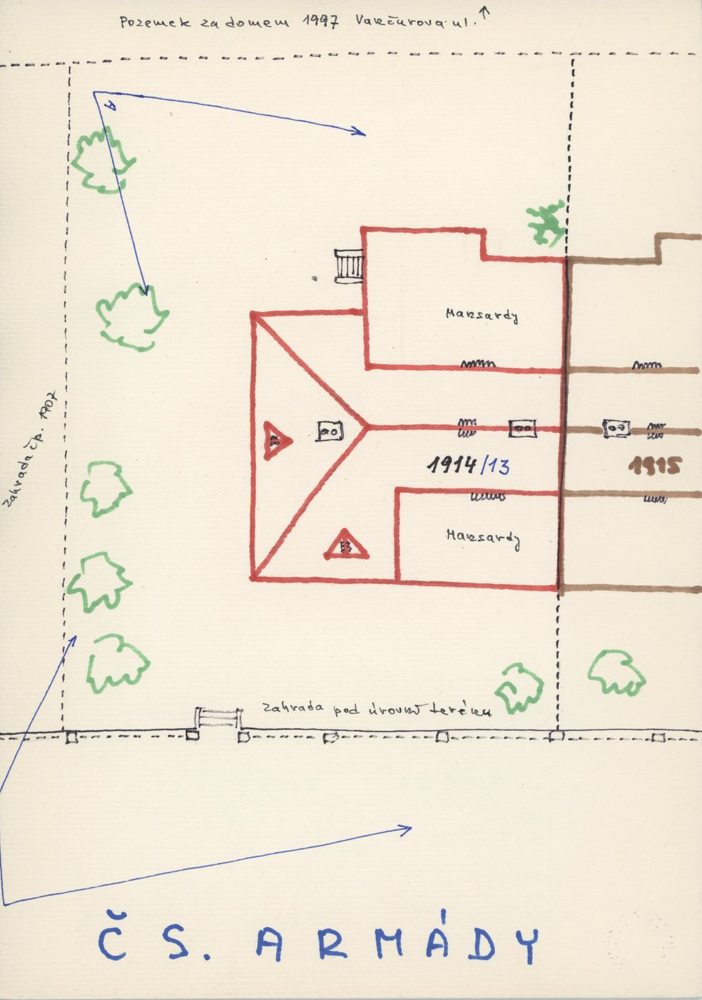
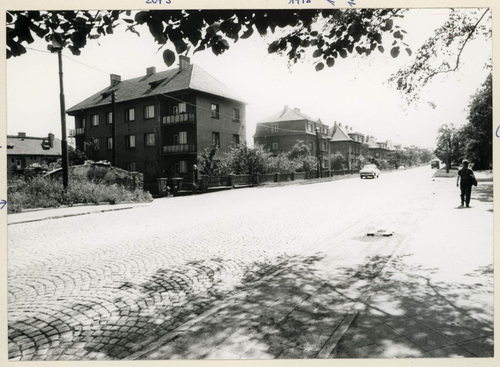
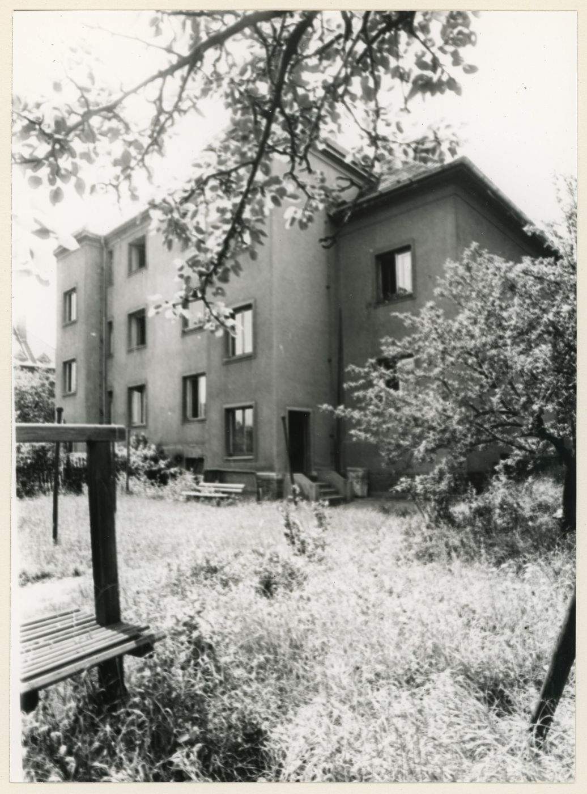
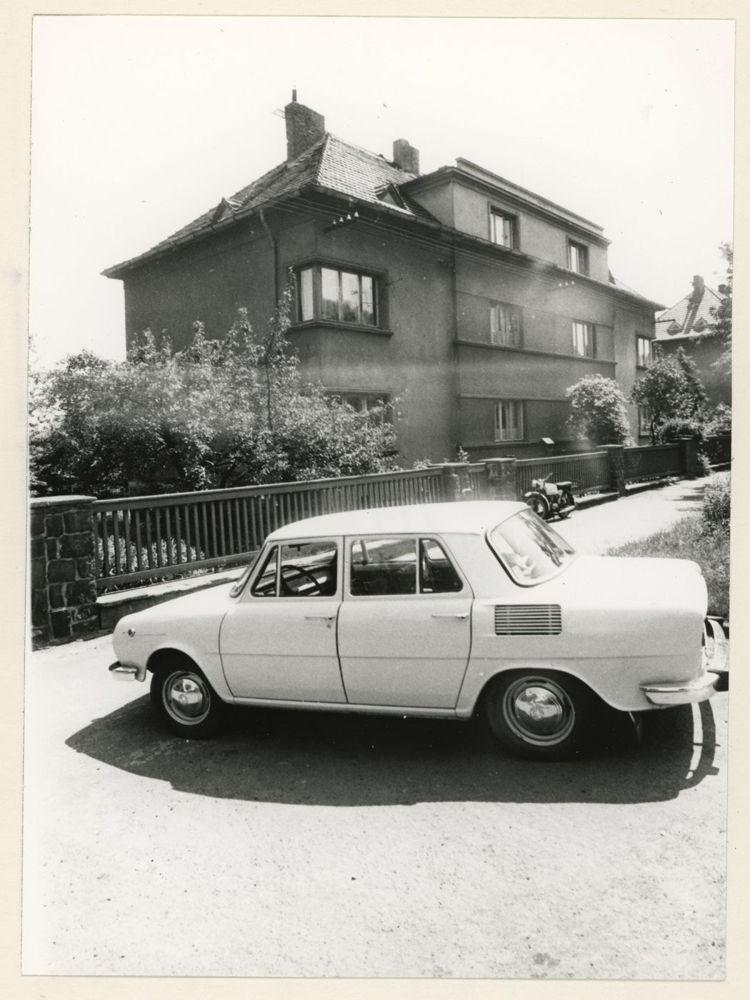
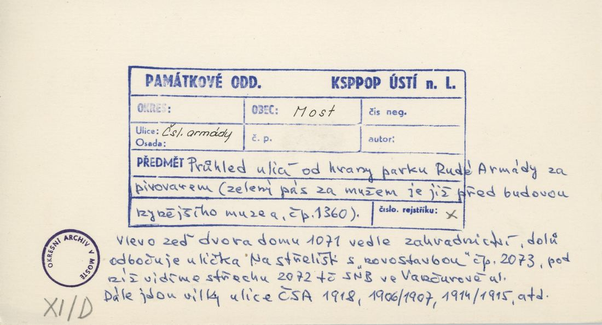
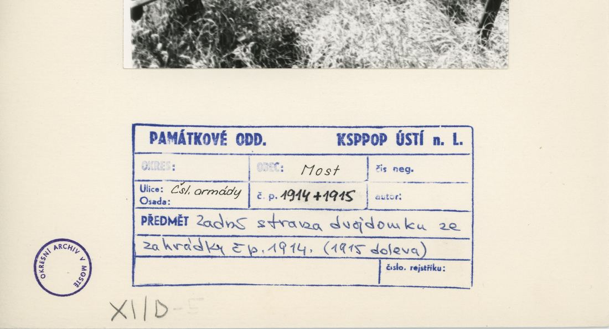
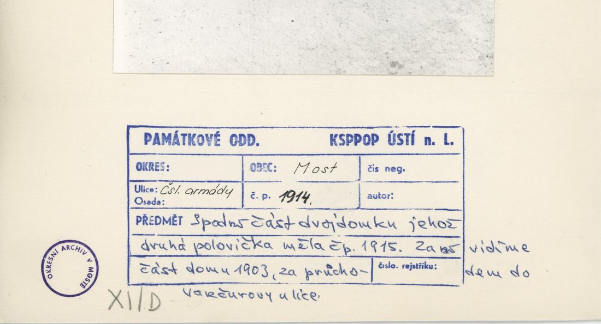
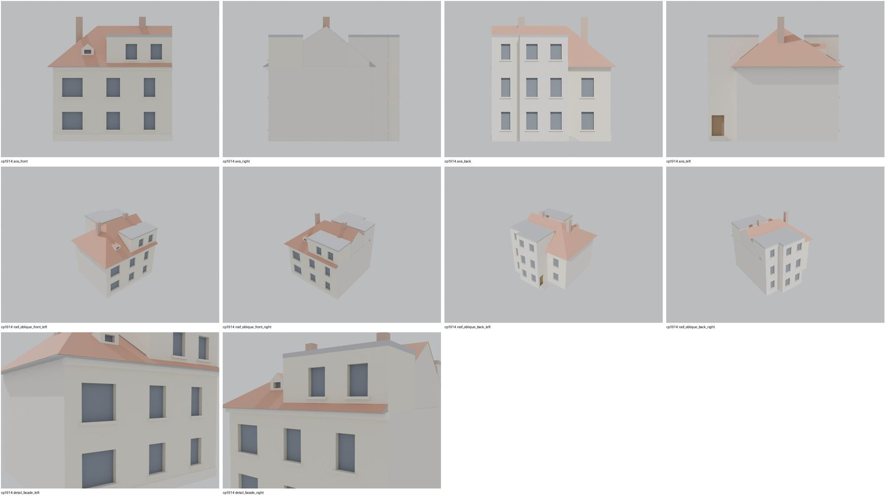
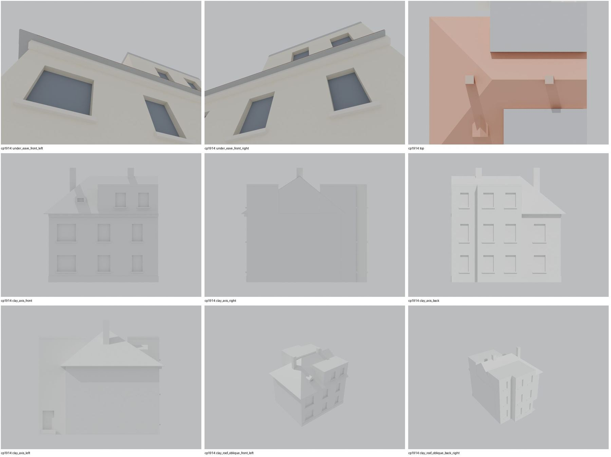

Identita domu
Levá (SV) polovina dvojdomu (plán cp_1914_001: vlevo zahrada 1907, vpravo 1915). Foto cp_1914_001 (z ulice s autem), cp_1914,1915_001 (zezadu).
Použité prameny: cp_1914_001 PLANE; cp_1914_001, cp_1914,1915_001 PHOTO; cp_1906,1914,1918_001; cp_1903,1904,1907,1914,1915_001.
GIS: bez GIS. V oblasti „Cs_Armady“ je dům veden podruhé se stejnými přílohami.
Prameny (9 příloh)
Všechny přílohy domu v databázi Libuše, každá otevřená a zapsaná v plan_search.json. Stav rešerše plánů: found; situační/střešní náčrt (ruční, nekótovaný, PLANE,BW) – není stavební výkres; půdorysné rozměry z GIS nebo odhad. Kliknutím otevřete větší náhled.


situační náčrt
SHA-256 689dfa72d009…

fotografie
SHA-256 7c795be5fbcf…


fotografie
SHA-256 74600388a0d3…


fotografie
SHA-256 cb4624a6a334…


fotografie
SHA-256 610de9f27cc2…

archivní karta (rub) · výřez textu
SHA-256 7b5ae2f6fcf0…


archivní karta (rub) · výřez textu
SHA-256 918eb097ee1f…


archivní karta (rub) · výřez textu
SHA-256 d748688f42bc…


archivní karta (rub) · výřez textu
SHA-256 b41c9b559b19…
Model
| Revize modelu | r4 (zachované revize: r1, r2, r4) |
|---|---|
| Poloha | odhad: sekvence podle orientačních čísel |
| Šířka průčelí | 10,50 m |
| Výška okapu | 6,60 m (odhad) |
| Podlaží | 2 |
| Střecha podle pramenů | valba přes celý dvojdům, hřeben podél ulice, uprostřed vpředu a vzadu mansardová patra (ruční náčrt) |
| Střecha v modelu | valbová / sedlová (hřeben, valby, štíty) |
| Otvory | 21 |
| Vikýře / vedlejší hmoty | 1 / 2 |
| Polygonů | 382 |
Zdroje rozměrů, jak jsou zapsány v plánu modelu
| Rozměry | HYPOTHESIS: 10.5 x 12.0 m half of a semi-detached villa (no GIS footprint); position = archive sequence |
|---|---|
| Průčelí | photos cp_1914_001, cp_1915_001/002, cp_1914,1915_001: 2 storeys + mansard attic |
| Střecha | cp_1914_001.jpg PLANE (bea8d1c0) – ruční náčrt střechy a parcely: valby na koncích, hřeben souběžný s ulicí, uprostřed vpředu i vzadu mansardové patro (Mansarda/Mansardy), vstupy ze zahrady |
Kontrola r4: brána geometrie a 19 pohledů
Automatická brána (uzavřené podkroví, krytí střechou, UV, síť, počty otvorů proti fotografii s rámečkem) a 19 renderů: čtyři osy, čtyři šikmé pohledy na střechu, dva detaily průčelí, dva pohledy pod přední okap, pohled shora a šest pohledů bez barev materiálů. Stav: prošla.


Nálezy a opravy
- černý pás na společné zdi (koplanární zadní křídlo) – opraveno, nutná přestavba
- průčelí s širokým oknem u nároží a mansardovým patrem sedí s cp_1914_001
- po přestavbě 25. 10.: černý pás zmizel; ostatní pohledy beze změny
Revize r4: doklad fasád a změny
Okna a dveře se počítají na fotografii s červeným rámečkem po dělicích zdech domu. Řádky oken jsou zdola nahoru; „hypotéza“ jsou otvory, které na snímku vidět nejsou.
| Fasáda | Okna po podlažích | Hypotéza (id otvorů) | Poznámka |
|---|---|---|---|
| main | 2 / 2 | G3, U3 | široké okno u vnějšího nároží a střední okno v obou podlažích; okno u dělicí zdi zakryté stromem / zkratkou = hypotéza; vstup do ulice není (náčrt: vstupy ze zahrady) |
| dormers | 1 | – | malý trojúhelníkový vikýř v přední ploše |
| back | – | KG1, KU1 | vstup se schody podle náčrtu; okna hypotéza |
Pro tento dům není fotografie, na které by šlo fasádu spolehlivě vyznačit.
Změny proti r2/r3
- closed attic, eave closures, gables along the roof underside, flat-roof covering slab, names for tools/most_qa (z4_post.py)
- semi-detached pair 1914/1915: this left half builds the shared pair roof and keeps its own side of the party wall (roof.pair_clip); chimneys and mansard windows of its half moved with it (r2: the left half carried the whole roof, the right half had none)
- roof segmentation check (workflow 1.2) against the hand sketch cp_1914_001.jpg PLANE (bea8d1c0) – ruční náčrt střechy a parcely: hip roof over the pair with hipped ends, ridge along the street, central mansard storey front (and back), rear block, entrance from the garden with steps; r2-r4 had a mansard ring round the whole house and a street door, which the sketches contradict
Hypotézy
Vše níže je model_hypothesis, provisional, locked: false.
- půdorys 10,5 × 12 m
- poloha sekvence
- entrance at the outer end of each half (uncertain)
- body depth, mansard storeys, rear block and dormer positions read on the unscaled hand sketch (ratios to the half width, averaged over both halves of the pair) – model_hypothesis, provisional, locked=false
- eave 6.6 m, mansard storey 2.7 m, ridge rise 3.6 m estimated from photographs; small triangular dormers on the hipped ends and on the rear slope (sketch) are not modelled
Soubory
- Model čp. 1914, GLB
- Pracovní složka: F:\MOST\output\zatecka_street_claude_2026-10-17\houses\cp1914\
plan_search.json,geometry_plan.json,README.md,texture_handoff_spec.json,r4/cp_1914_G_r4.blend,r4/qa/qa_review.json, rámečkyframes/cp1914_*